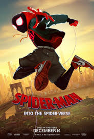
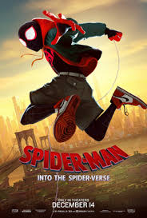
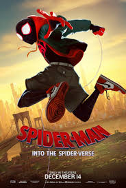
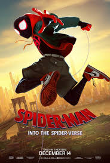

 

Balthazar Blake (Nicolas Cage) is a master sorcerer in modern-day Manhattan trying to defend the city from his arch-nemesis, Maxim Horvath (Alfred Molina).
Balthazar can't do it alone, so he recruits Dave Stutler (Jay Baruchel), a seemingly average guy who demonstrates hidden potential, as his reluctant protégé.
The sorcerer gives his unwilling accomplice a crash course in the art and science of magic, and together, these unlikely partners work to stop the forces of darkness.
It'll take all the courage Dave can muster to survive his training, save the city and get the girl as he becomes The Sorcerer's Apprentice.
Dracula Untold/Film synopsis
In 15th-century Transylvania, Vlad III (Luke Evans), prince of Wallachia, is known as a just ruler. With his beloved wife, Mirena (Sarah Gadon)
,
Vlad has brokered a prolonged period of peace and ensured that his people are protected, especially from the Ottoman Empire.
However, when Sultan Mehmed II (Dominic Cooper) demands 1,000 of the country's boys, including Vlad's son, for his army,
Vlad makes a deal with a monster that will enable him to defeat the Turks --
but cost him his humanity.
In April 1945, the Allies are making their final push in the European theater.
A battle-hardened Army sergeant named Don "Wardaddy" Collier (Brad Pitt),
leading a Sherman tank and a five-man crew, undertakes a deadly mission behind enemy lines.
Hopelessly outnumbered, outgunned and saddled with an inexperienced soldier (Logan Lerman) in their midst,
Wardaddy and his men face overwhelming odds as they move to strike at the heart of Nazi Germany.
Bitten by a radioactive spider in the subway, Brooklyn teenager Miles Morales suddenly develops mysterious powers that transform him into the one and only Spider-Man.
When he meets Peter Parker, he soon realizes that there are many others who share his special, high-flying talents.
Miles must now use his newfound skills to battle the evil Kingpin, a hulking madman who can open portals to other universes and pull different versions of Spider-Man into our world.
Set in the year 2092, Earth has become nearly uninhabitable. Fleeing the sick earth, UTS corporation builds a new orbiting Home for humanity. But only a chosen few can ascend.
The plot follows the crew of a space junk collector ship called The Victory. But their lives take a huge turn when they discover a humanoid child robot named Dorothy
that’s known to be a weapon of mass destruction.
Burdened with debts and wishes to fulfill, they get involved in a risky business deal and maybe something more than they might have imagined.
THE SORCERER'S APPRENTICE
https://www.imdb.com/title/tt0963966/DRACULA UNTOLD
https://www.imdb.com/title/tt0829150/plotsummaryFURY
https://www.imdb.com/title/tt2713180/SPIDERMAN INTO THE SPIDER-VERSE
https://www.rottentomatoes.com/m/spider_man_into_the_spider_verseSPACE SWEEPERS
https://www.imdb.com/title/tt12838766/